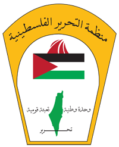

Palestine is a small region of land that has played a prominent role in the ancient and modern history of the Middle East. The history of Palestine has been marked by frequent political conflict and violent land seizures because of its importance to several major world religions, and because Palestine sits at a valuable geographic crossroads between Africa and Asia. Today, Arab people who call this territory home are known as Palestinians, and the people of Palestine have a strong desire to create a free and independent state in this contested region of the world.
The word Palestine derives from the Greek word, Philistia, which dates to Ancient Greek writers' descriptions of the region in the 12th century B.C. Since the fall of the Ottoman Empire in World War I to 1948, Palestine typically referred to the geographic region located between the Mediterranean Sea and the Jordan River. Arab people who call this territory home have been known as Palestinians since the early 20th century. Much of this land is now considered present-day Israel.
Today, Palestine theoretically includes the West Bank (a territory that sits between modern-day Israel and Jordan) and the Gaza Strip (which borders modern-day Israel and Egypt). However, control over this region is a complex and evolving situation. There is no international consensus concerning the borders, and many areas claimed by Palestinians have been occupied by Israelis for years.
More than 135 United Nations member countries recognize Palestine as an independent state, but Israel and some other countries, including the United States, don’t make this distinction.

Scholars believe the name “Palestine” originally comes from the word “Philistia,” which refers to the Philistines who occupied part of the region in the 12th century B.C.
Throughout history, Palestine has been ruled by numerous groups, including the Assyrians, Babylonians, Persians, Greeks, Romans, Arabs, Fatimids, Seljuk Turks, Crusaders, Egyptians and Mamelukes.
From about 1517 to 1917, the Ottoman Empire ruled much of the region. When World War I ended in 1918, the British took control of Palestine. The League of Nations issued a British mandate for Palestine—a document that gave Britain administrative control over the region, and included provisions for establishing a Jewish national homeland in Palestine—which went into effect in 1923.
In 1947, after more than two decades of British rule, the United Nations proposed a plan to partition Palestine into two sections: an independent Jewish state and an independent Arab state. The city of Jerusalem, which was claimed as a capital by both Jews and Palestinian Arabs, was to be an international territory with a special status.
Jewish leaders accepted the plan, but many Palestinian Arabs—some of whom had been actively fighting British and Jewish interests in the region since the 1920s—vehemently opposed it.
Arab groups argued that they represented the majority of the population in certain regions and should be granted more territory. They began to form volunteer armies throughout Palestine.
In May 1948, less than a year after the Partition Plan for Palestine was introduced, Britain withdrew from Palestine and Israel declared itself an independent state, implying a willingness to implement the Partition Plan.
Almost immediately, neighboring Arab armies moved in to prevent the establishment of the Israeli state. The 1948 Arab-Israeli War that ensued involved Israel and five Arab nations—Jordan, Iraq, Syria, Egypt and Lebanon. By the war's end in July 1949, Israel controlled more than two-thirds of the former British Mandate, while Jordan took control of the West Bank, Egypt and the Gaza Strip.
The 1948 conflict opened a new chapter in the struggle between Jews and Palestinian Arabs, which now became a regional contest involving nation-states and a tangle of diplomatic, political and economic interests.
In 1964, the Palestine Liberation Organization (PLO) was formed for the purpose of establishing a Palestinian Arab state on the land previously administered under the British Mandate, and which the PLO considered to be occupied illegitimately by the State of Israel.
Although the PLO was originally dedicated to the destruction of the State of Israel as a means of attaining its goal of Palestinian statehood, in the 1993 Oslo Accords, the PLO accepted Israel's right to exist in exchange for formal recognition of the PLO by Israel—a high water mark in Israeli-Palestinian relations. In 1969, the well-known Palestinian leader Yasser Arafat became the Chairman of the PLO and held that title until he died in 2004.
The Six-Day War was triggered during a volatile period of diplomatic friction and skirmishes between Israel and its neighbors. In April 1967, the clashes worsened after Israel and Syria fought a ferocious air and artillery engagement in which six Syrian fighter jets were destroyed.
In the wake of the April air battle, the Soviet Union provided Egypt with intelligence that Israel was moving troops to its northern border with Syria in preparation for a full-scale invasion. The information was inaccurate, but it nevertheless stirred Egyptian President Gamal Abdel Nasser to advance forces into the Sinai Peninsula, where they expelled a United Nations peacekeeping force that had been guarding the border with Israel for over a decade.
Israel Defense Forces then launched a preemptive aerial attack against Egypt on June 5, 1967. Both nations claimed that they were acting in self-defense in the ensuing conflict, which ended on June 10 and also drew in Jordan and Syria, who sided with Egypt. The Six-Day War, as it came to be called, resulted in major land gains for Israel.
By the end of the war, Israel had taken control of the Gaza Strip, the West Bank, the Sinai Peninsula (a desert region situated between the Mediterranean Sea and the Red Sea) and the Golan Heights (a rocky plateau located between Syria and modern-day Israel). The outcome of the 1967 Arab-Israeli War would lead to continued tension and armed conflict between Israel and its neighbors over the coming decades.
In 1987, the First Intifada broke broke out, a boiling over of Palestinian anger over ongoing Israeli occupation of Gaza and the West Bank. Palestinian militia groups revolted, and hundreds of people were killed.
A subsequent peace process, known as the Oslo Peace Accords, was initiated during the early 1990s in a multilateral attempt to end the ongoing violence.
The first Oslo Accord (Oslo I) created a timetable for a Middle East peace process and a plan for an interim Palestinian government in parts of Gaza and the West Bank. The agreement was signed in 1993 and witnessed by Israeli Prime Minister Yitzhak Rabin and Palestinian leader Yasser Arafat. Arafat returned to Gaza in 1994 after being exiled for 27 years. He headed up the newly-formed Palestinian Authority.
In 1995, Oslo II laid the groundwork for a complete withdrawal of Israeli troops from parts of the West Bank and other areas. It also set a schedule for Palestinian Legislative Council elections. Unfortunately, the Oslo Accords failed in their ultimate goal of bringing Israel and the Palestinians to agree over a full-fledged peace plan.
In September 2000, the Second Palestinian Intifada began. One of the triggers for the violence was when Ariel Sharon, a right-wing, Jewish Israeli who would later become Israel’s prime minister, visited the Muslim holy site at the al-Aqsa Mosque in Jerusalem. Many Palestinians felt this was an offensive move, and they protested.
Riots, suicide bombings and other attacks subsequently broke out, putting an end to the once-promising peace process. This period of violence between Palestinians and Israelis lasted nearly five years. Yasser Arafat died in November 2004, and by August of 2005, the Israeli army withdrew from Gaza.
In 2006, Hamas, a Sunni Islamist militant group, won the Palestinian legislative elections. That same year, fighting between Hamas and Fatah, the political group that controlled the PLO, ensued. In 2007, Hamas defeated Fatah in a battle for Gaza.
Many countries consider Hamas to be a terrorist organization. The group has carried out suicide bombings and repeatedly called for the destruction of Israel.
Hamas and Israel fought each other in several bloody wars, including Operation Cast Lead in December 2008, Operation Pillar of Defense in November 2012 and Operation Protective Edge in July 2014.
In April 2014, Hamas and Fatah agreed to a deal that would form a unified national Palestinian government.
Palestinians are still fighting for an official state that’s formally recognized by all countries. Although Palestinians occupy key areas of land, including the West Bank and the Gaza Strip, some Israelis, with their government's blessing, continue to settle in areas that are generally agreed to be under Palestinian control. Many international rights groups consider such settlements illegal, the borders aren’t clearly defined, and persistent conflict continues to be the norm. A substantial proportion of Israelis also oppose the settlements and would prefer to find peaceful ways to resolve their land disputes with the Palestinians.
In May 2017, leaders of Hamas presented a document that proposed the formation of a Palestinian state using the 1967 defined borders, with Jerusalem as its capital. However, the group refused to recognize Israel as a state, and the Israeli government promptly rejected the plan.
In May 2018, tensions erupted when the U.S. Embassy relocated from Tel Aviv to Jerusalem. Perceiving this as signal of American support for Jerusalem as Israel’s capital, Palestinians responded with protests at the Gaza-Israel border, which were met with Israeli force resulting in the deaths of dozens of protesters.
While so much of Palestine’s history has involved bloodshed, displacement, and instability, many world leaders continue to work toward a resolution that will result in peace throughout the region.